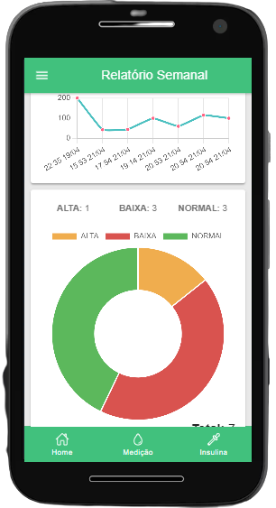

Desenvolvedor
PHP,
Laravel,
React,
VueJS,
Angular,
Ionic,
Delphi
Formação
Bacharel em Ciência da Computação - FAFIMAN
Habilidades
- Desenvolvimento de Sistemas Desktop
- Desenvolvimento de Sistemas Web
- Desenvolvimento de Sites
- Desenvolvimento de Aplicativos
- Consultoria Especializada
- Suporte Remoto
Trabalhos
Apresento a seguir uma seleção de meus projetos mais relevantes, demonstrando a variedade e a profundidade do meu trabalho no desenvolvimento de soluções tecnológicas.

Rastreio - TransApucarana
Desenvolvido em colaboração com a Spartum Tec, este sistema de rastreamento permite aos clientes da TransApucarana acompanhar suas entregas em tempo real. A solução melhorou significativamente a logística e a experiência do usuário, proporcionando maior transparência e eficiência.


Portal - DataDip
O Datadip é um painel administrativo avançado que integra-se ao Power BI da Microsoft, proporcionando um gerenciamento eficiente de empresas, usuários e relatórios. Este painel possibilita o controle rigoroso sobre os acessos dos usuários, permitindo também direcionar relatórios específicos a cada um deles. Uma de suas características mais notáveis é a capacidade de configurar um fluxo operacional (flow), que determina a sequência e a frequência de exibição de cada relatório. Essa funcionalidade garante uma experiência mais fluida e facilitada no gerenciamento de dados, tornando a análise de informações empresariais mais acessível e eficaz.

Cappellus Web - Loofting
O Cappellus Web, desenvolvido em parceria com a Infinitysoft, é uma ferramenta criada para os representantes comerciais da Loofting. Permite a rápida digitação de pedidos, agilizando a avaliação financeira e a importação de dados para sistemas gerenciais, além de facilitar a emissão de documentos fiscais.
Colmeia Verde
A plataforma Colmeia Verde representa um marco no e-commerce de produtos eco-friendly. Minha participação incluiu a implementação de integrações API e o desenvolvimento de novas funcionalidades, contribuindo para uma experiência de compra mais unificada e sustentável.

D-Glic - Diário da Glicemia
O D-Glic é um aplicativo desenvolvido para auxiliar pessoas com diabetes no monitoramento da glicemia. O app fornece gráficos detalhados, facilitando o acompanhamento e a gestão da condição de saúde dos usuários.

EAD PDV
O EAD PDV é uma plataforma de aprendizado online desenvolvida para oferecer treinamento e informações aos colaboradores e prestadores de serviço de uma empresa. A solução centraliza recursos educacionais, facilitando o acesso à formação e ao desenvolvimento profissional.

SpartumDocs - TransApucarana
O SpartumDocs é um sistema desenvolvido para disponibilizar os documentos fiscais da TransApucarana. Ele permite que os clientes realizem cotações de transporte e acompanhem pedidos de forma autônoma e prática.

Saúde nas Mãos
O projeto Saúde nas Mãos foi desenvolvido durante um hackathon e consiste em uma plataforma Web onde usuários podem cadastrar dados médicos, contatos, patologias, remédios e alergias, oferecendo um histórico de saúde acessível e organizado.

Spartum®Educ
O SpartumEduc é uma aplicação criada como parte do patrocínio da Infinitysoft ao XXII SICITE (Seminário de Iniciação Científica e Tecnológica) da UTFPR - Apucarana, em 2018. A ferramenta foi utilizada para avaliar publicações científicas durante o evento.

Spartum®Web
O SpartumWeb é uma ferramenta web para gerenciamento de clientes, produtos e pedidos. Integrada a sistemas gerenciais, ela oferece uma solução completa para o controle de vendas e estoque.
Quer saber mais sobre minhas experiências profissionais?
Sou qualificado para desenvolver a melhor solução para o seu negócio, com base em suas
necessidades reais. Minha principal preocupação é gerar uma ferramenta que possa agregar
valor real ao seu negócio, seja qual for o tamanho ou ramo de atuação da sua empresa.
Currículo